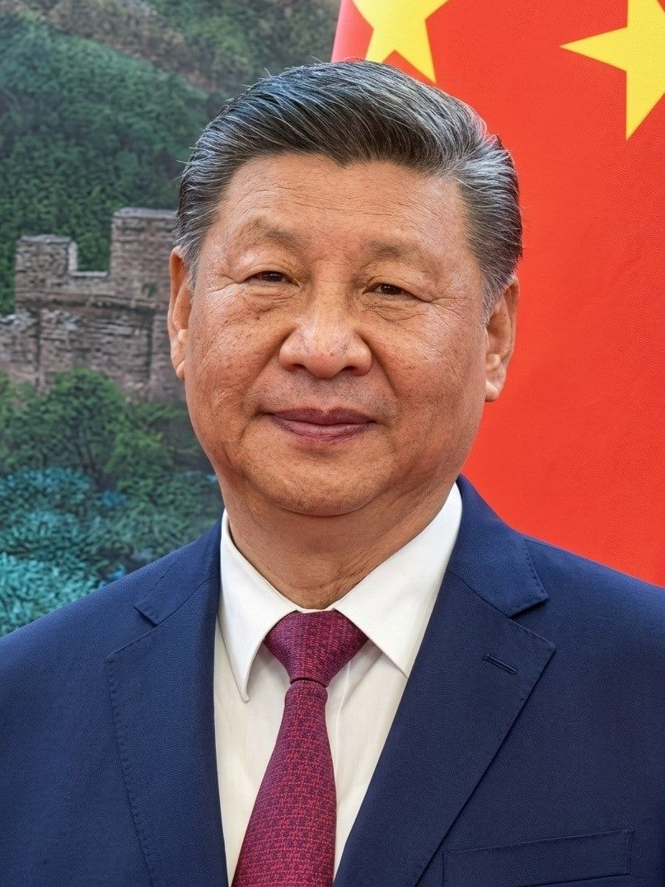

트럼프 “시진핑 9월 24일 방미”… 정상회담서 AI 의제 논의 예고
도널드 트럼프 미국 대통령이 시진핑 중국 국가주석이 9월 24일 미국을 방문한다고 밝히며, 정상회담에서 인공지능(AI) 문제를 논의하겠다고 예고했다. 미중 최고지도자의 대면 회담이 성사되면 무역·기술 현안에 분수령이 될 전망이다.
유선경 기자 · 2026.07.24
橋중국

자유시보(自由時報) 등에 따르면, 트럼프 대통령은 시진핑 주석이 9월 24일 미국을 찾을 예정이며 회담에서 AI 의제를 다룰 것이라고 말했다. 두 정상의 대면 만남이 예정대로 이뤄질지 국제사회의 이목이 쏠린다.
광고 문의 · 300×250AI는 최근 미중 간 가장 민감한 기술 의제로 떠올랐다. 반도체·모델·데이터를 둘러싼 경쟁과 수출 통제가 얽혀 있어, 정상 차원의 논의가 향후 산업 지형에 영향을 줄 수 있다.
회담이 성사되면 관세 조정, 공급망, 첨단기술 규제 등 폭넓은 현안이 테이블에 오를 것으로 예상된다. 양측 모두 자국 산업 보호와 협상 지렛대 사이에서 수위를 조절할 것으로 보인다.
다만 정상 방문 일정과 의제는 막판까지 조정될 수 있는 사안이다. 과거에도 예정된 고위급 접촉이 변수에 따라 미뤄지거나 형식이 바뀐 사례가 있었다.
华橋時報는 미중 관계를 대결과 협력이 공존하는 구조로 본다. 정상 간 대화 자체가 긴장 완화의 신호가 될 수 있으나, 구체적 합의로 이어질지는 지켜봐야 한다. 일정과 결과는 양국 공식 발표로 확인해야 한다.
출처·참고 (사실 확인용 — 본문은 직접 재작성)
· 自由시보 등
· 自由시보 등